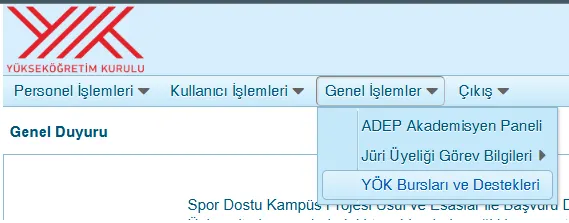
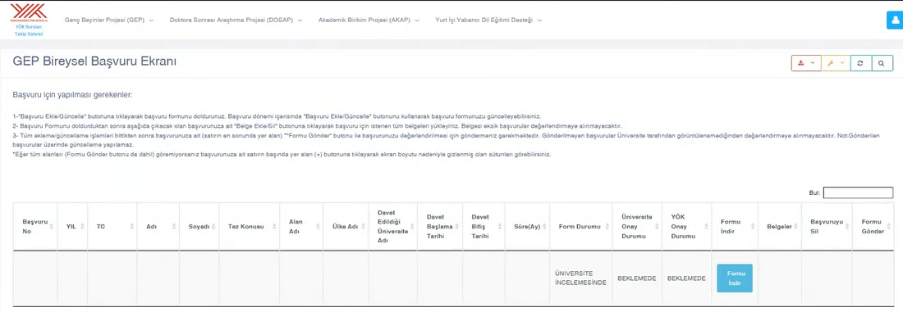
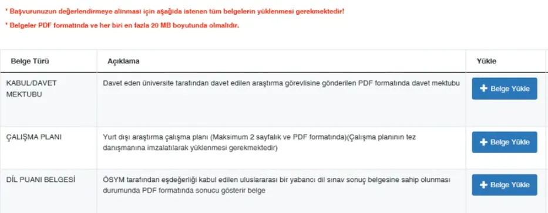

Her şey YÖK tarafından sisteme kayıtlı mailime gelen o duyuruyu okumamla başladı. Çeşitli alanlarda doktora yapan Araştırma Görevlilerine yönelik hazırlanan “Genç Beyinler Programı” (GEP) mailini ilk okuduğumda henüz yeterlilik sınavına girmemiştim. Burs programının şartlarından birisi tez önerisinin kabul edilmiş olması olduğu için, öncelikle yeterlilik sınavını başarıyla geçmek gerekiyordu.
Aynı senenin (2025) Eylül sonuna doğru tez önerim kabul edilince programın şartlarını tekrar inceledim. Geriye yalnızca dil puanı eksiğim kalmıştı; onu da e-YDS’ye girerek hızlıca hallettim.
Sizlere fikir vermesi açısından programın 2025 senesi için geçerli olan şartlarını aşağıya bırakıyorum. (Elbette başvuru yapacağınız dönemde bu şartların güncellenme ihtimalini de her zaman göz önünde bulundurmalısınız.)
YÖK Genç Beyinler Programı (GEP) Başvuru Şartları
Araştırma Görevlisi kadrosunda görev yapan en fazla 100 doktora öğrencisinin, alan kısıtlaması olmaksızın tez konuları hakkında araştırma yapmak üzere yurt dışına gönderilmelerine ilişkin programın şartları şunlardı:
- T.C. vatandaşı olup halen bir devlet yükseköğretim kurumunda araştırma görevlisi olarak çalışıyor olmak.
- YÖK tarafından belirlenmiş öncelikli alanlarda doktora eğitiminin tez aşamasına geçmiş olmak.
- Son 3 yıl içerisinde yapılan YÖKDİL, YDS, e-YDS’den veya ÖSYM tarafından eşdeğerliği kabul edilen uluslararası bir yabancı dil sınavından (çalışmanın yapılacağı dilden) en az 75 puan aldığını belgelendirmek.
- Erkek adaylar için askerlikle ilişiği bulunmamak (Askerliği yapmış, tecil edilmiş veya tecil edilebilecek durumda olmak).
- Başvuru tarihi itibarıyla doktora eğitimine son üç yılda başlamış olmak.
- Kabul Mektubu Şartı: URAP, THE, Shanghai ve QS tarafından yapılan dünya üniversite sıralamalarında, son 3 yıl içerisinde ilk 700 içerisine giren üniversitelerden birinden en az bir, en fazla üç ay için davet mektubu almak.
En Can Alıcı Nokta: Üniversiteden Kabul Almak
Tüm bu süreç devam ederken ve daha tez önerim bile kabul edilmeden üniversite araştırması yapmaya başlamıştım. İletişim kurduğum hocalardan bir tanesi talebimi olumlu karşıladı ve kabul mektubumu bana iletti. Şartlardaki 6. maddede yer alan üniversite sıralaması kuralı, TÜBİTAK 2214 kadar sınırlayıcı olmasa da çalışma alanınıza uygun bir üniversite bulmak ve oradan kabul almak bu işin en can alıcı noktası diyebilirim. Burada ayrıca vize işlemlerinin ne kadar süreceği hakkında da bir öngörüde bulunup, gideceğiniz tarihleri ona göre belirlemenizde fayda var.
YÖKSİS Üzerinden Başvuru ve Evrak Yükleme Adımları
Başvuru şartlarını adım adım yerine getirdikten sonra, son başvuru tarihine kadar yoksis.yok.gov.tr adresinden giriş yapıp kayıt oluşturmanız gerekiyor.

YÖK Bursları ve Destekleri sekmesinden tıkladığınızda aşağıdaki sayfaya yönlendiriliyorsunuz:

Sayfanın üst kısmında verilen açıklamayı dikkatlice okuyup ona göre işlem yapmalısınız. Yeni başvuru için gerekli evrakları sisteme yüklerken tüm kontrolleri yaptığınızdan ve en sonunda “Formu Gönder” butonuna tıkladığınızdan emin olun. Aksi halde formu gönderdikten sonra sistemde değişiklik yapma imkânınız olmuyor. Forma yüklemeniz gereken belgeler şunlar:

Kurum İçi İzinler ve Senato Kararı (Kritik Aşama)
Sistemdeki işlemler tamamlanıp başvuru yapıldıktan sonra işiniz bitmiyor. Görevlendirme izniniz (Senato kararı) için, yaptığınız bu başvuruyu açıklayan bir dilekçe yazarak bölümünüz üzerinden ilgili birime ulaştırılmak üzere sisteme girişini yapmanızı şiddetle tavsiye ederim. Aksi halde YÖK’ün istediği tarih aralığında Senato kararının çıkması riske girebilir. Bağlı olduğunuz üniversitedeki evrak işleyiş hızını mutlaka takip edin.
Şahsi tavsiyem; YÖKSİS’e yüklediğiniz tüm belgelerin bir kopyasını ve başvurunuzun “Üniversite İncelemesinde” olduğunu gösteren sayfanın ekran görüntüsünü dilekçenizin ekine mutlaka koymanızdır.
Bekleme Süreci ve Sonuçların Açıklanması
Başvurunuzu eksiksiz yaptıktan sonra bekleme safhasına geçiyorsunuz. Sonuçların açıklanması başvurunun ardından yaklaşık 2 ay kadar sürüyor. YÖK web sayfasında tüm dönemler için tarihler açık olarak belirtiliyor. Güncel takvimi bu bağlantıdan takip edebilirsiniz: YÖK Uluslararası Araştırma Programları Başvuru Duyurusu
Kabul Sonrası: Kefaletname ve Vize İşlemleri
Karar açıklandıktan sonra YÖK sisteminde başvurunuz “Onaylandı” olarak görünüyor ve aynı gün veya ertesi gün bağlı bulunduğunuz birime resmi yazı ulaşıyor. Bu aşamada onaylanan destek sürenizi ve miktarını kontrol etmenizde fayda var. Son işlem olarak, Usul ve Esaslar dokümanında da belirtilen Kefaletname belgesini 2 kefile imzalatarak üst biriminize, oradan da Rektörlükteki ilgili birime iletmesini takip etmeniz gerekiyor.
Önemli İpucu: Kefillerinizin bekar ve memur olması işinizi çok kolaylaştıracaktır. Aksi halde evli olan kefillerin eşlerinden noter onaylı muvafakatname isteniyor. Bu kısım tüm başvuru ve kabul sürecinde beni en çok zorlayan aşamaydı diyebilirim.
Kefaletname sürecini de atlattıktan sonra artık valizinizi hazırlamaya ve vize işlemleri için belge toplamaya başlayabilirsiniz. Vize başvurunuzda kabul mektubunuzu ve YÖK programından kabul aldığınızı bildiren üst yazılar ve destek miktarı belgelerini muhakkak koymalısınız. Bunları başvuracağınız ülkenin diline çeviri yaptırmanız da ayrıca gerekecektir.
Şimdiden başvuru yapacak herkese hayırlı olsun, başarılar dilerim!